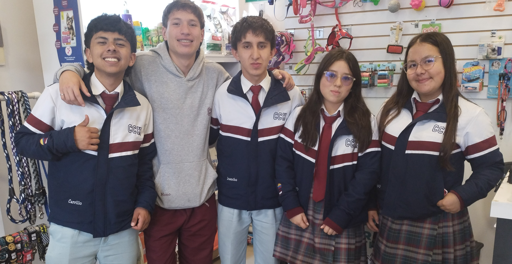
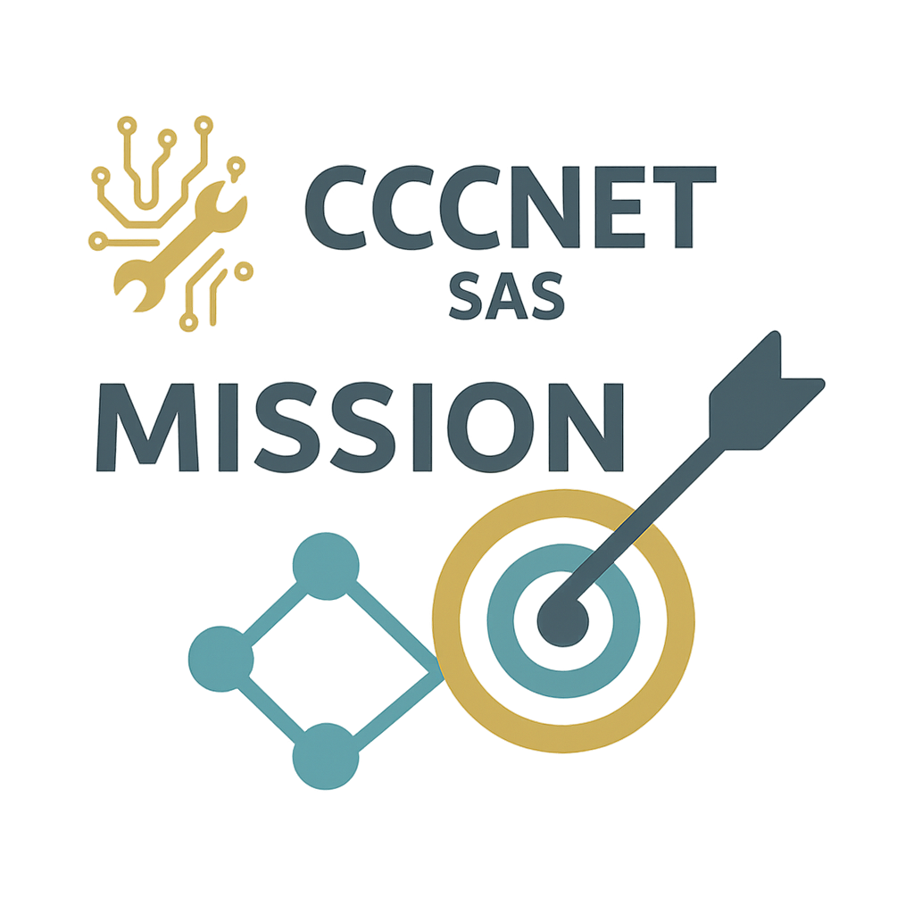
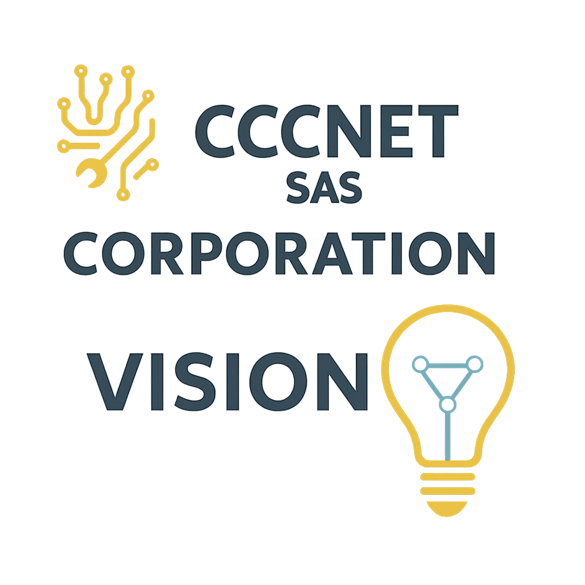
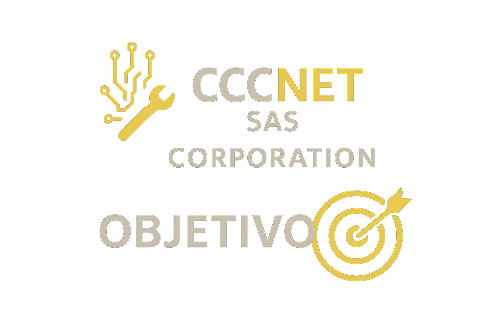
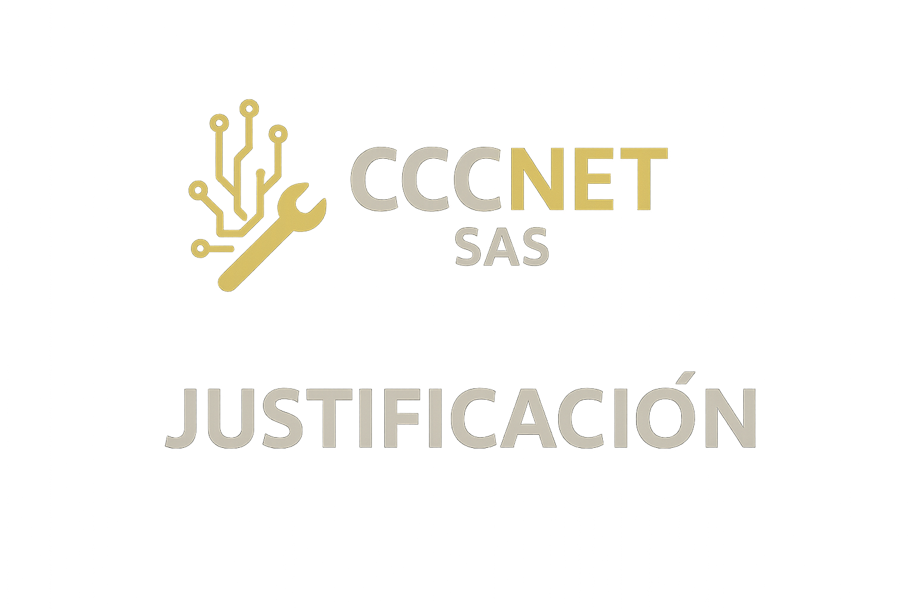
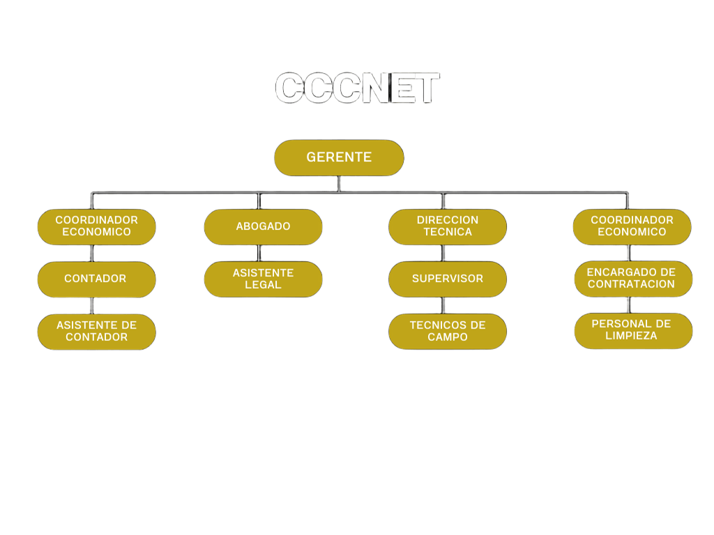

CCCNet es una empresa formada por 5 jovenes emprendedores que buscan ayudar a la comunidad por medio del mantenimiento de redes brindar un servicio que cumpla con los requerimentos del cliente

¿Por que creamos esta empresa?
Creamos esta empresa para poder ayudar a personas que se sienten o se han sentido inconforme cuando deciden hacer dicho mantenimiento
Nuestros Servicios
Soluciones adaptadas a tus necesidades: instalación, mantenimiento y soporte integral de redes.
Solo Mantenimiento
Desde: $350.000 COP
Revisión y diagnóstico completo de la red.
Actualización de software y limpieza de equipos.
Configuración de seguridad (firewall, accesos).
Resolución de problemas de conectividad.
Soporte técnico (remoto y/o en sitio).
Informe detallado del estado de tu red.
Solo Instalación
Desde: $650.000 COP
Diseño y planificación personalizada de la red.
Suministro e instalación de equipos y cableado.
Configuración inicial y seguridad perimetral.
Pruebas exhaustivas de rendimiento.
Documentación completa y garantía de 90 días.
Instalación y Mantenimiento
Desde: $850.000 COP
Incluye beneficios de Instalación y Mantenimiento.
Plan preventivo trimestral.
Precios preferenciales en ampliaciones.
Soporte prioritario y atención personalizada.
Membresías: Conectividad Sin Interrupciones
🥉 Gold (Básica)
Mensual: $200.000 COP Anual: $2.160.000 COP
Soporte remoto ilimitado (2h mensuales).
1 mantenimiento preventivo anual en sitio.
Diagnóstico remoto de red.
Prioridad de respuesta: 8h hábiles.
5% de descuento en instalaciones.
🥈 Platinum (Premium)
Mensual: $450.000 COP Anual: $4.590.000 COP
Soporte remoto y en sitio ilimitado (5h en sitio).
2 mantenimientos preventivos anuales en sitio.
Monitoreo proactivo 24/7.
Prioridad de respuesta: 4h hábiles.
10% de descuento en instalaciones.
🥇 Diamond (VIP)
Mensual: $850.000 COP Anual: $8.160.000 COP
Soporte remoto y en sitio ilimitado y prioritario.
Mantenimientos preventivos trimestrales.
Monitoreo 24/7 con informes mensuales.
Servicio Express incluido (< 2h).
15% de descuento en instalaciones.
Mision
Ofrecer altos niveles de calidad, seguridad, estabilidad y escalabilidad para impulsar a nuestros clientes a digitalizarse, optimizar su conectividad y facilitar su crecimiento y eficacia operativa.
En CCCNet creemos que la conectividad es una herramienta clave para el desarrollo empresarial y social. Nuestra misión se basa en brindar soluciones personalizadas que respondan a las necesidades tecnológicas actuales, con soporte técnico de excelencia, atención cercana y un enfoque constante en la innovación.

Vision
Ser reconocida por generar soluciones innovadoras de redes, conectando de la mejor manera a las personas, empresas y tecnologías para proporcionar la mejor red.
Visualizamos un futuro donde todas las regiones del país, tanto urbanas como rurales, puedan acceder a una red eficiente, segura y moderna. Queremos ser la referencia nacional en servicios de conectividad, consolidando alianzas estratégicas, desarrollando talento humano especializado y promoviendo un crecimiento tecnológico sostenible.

Objetivos
Objetivo general
Brindar soluciones integrales en instalación, mantenimiento y soporte de redes tecnológicas, garantizando calidad, confianza y eficiencia para clientes residenciales y empresariales en Cajicá y sus alrededores.
Objetivos especificos
Fidelizar y ampliar nuestra red de clientes, ofreciendo atención personalizada, tiempos de respuesta rápidos y un servicio técnico altamente calificado.
Mantener altos estándares de calidad y actualización tecnológica, mediante certificaciones, formación continua del equipo técnico y alianzas estratégicas con marcas reconocidas.
Impulsar el crecimiento sostenible de la empresa, expandiendo nuestras operaciones hacia ciudades cercanas como Zipaquirá y Chía, y diversificando nuestros servicios tecnológicos.

Justificación
La empresa surge ante la creciente demanda de soluciones tecnológicas confiables en el área de redes, conectividad y soporte técnico, tanto a nivel residencial como empresarial.
En un entorno cada vez más digitalizado, donde la conectividad es clave para el funcionamiento de hogares y negocios, se hace necesario contar con proveedores calificados que garanticen calidad, rapidez y eficiencia. Además, el desarrollo en municipios como Cajicá, Zipaquirá y Chía representa una oportunidad para ofrecer servicios integrales con alto estándar profesional, posicionándose como una marca de referencia en la región.

Servicio
Contenido del servicio...
Ventajas
En nuestra empresa entendemos las necesidades reales de las microempresas: presupuestos ajustados, tiempos de respuesta rápidos y un servicio confiable que no complique más de lo que soluciona. Aunque estamos comenzando y aún no contamos con certificaciones formales, compensamos con compromiso, responsabilidad y atención cercana en cada proyecto.
Ventajas que nos diferencian:
Atención personalizada: Soluciones reales que se ajustan a tus necesidades, sin costos innecesarios.
Precios justos y claros: Tarifas pensadas para emprendedores, con presupuestos honestos y sin sorpresas.
Respuesta rápida: Atendemos tus solicitudes en el menor tiempo posible para evitar pérdidas en tu negocio.
Flexibilidad en horarios: Podemos atenderte fuera del horario tradicional si tu operación lo requiere.
Acompañamiento constante: Después del servicio, seguimos contigo para asegurarnos de que todo funcione.
Cercanía local: Estamos en Cajicá y alrededores, siempre disponibles y cerca de tu negocio.
Queremos crecer contigo. Cada proyecto es una oportunidad para demostrar que la responsabilidad, la buena actitud y el deseo de aprender también son garantía de un buen servicio.
Organigrama
Aqui podemos observar nustro organigrama que define los puestos y las personas encargada de cada trabajo

Sostenibilidad Económica
Detrás de cada servicio hay un proyecto sólido respaldado por la confianza de
cinco inversionistas que creyeron en la idea de ofrecer mantenimiento de redes con calidad
y estabilidad a largo plazo. Ese respaldo inicial permitió construir una base financiera fuerte, invertir
en tecnología, capacitar al equipo y asegurar que cada cliente reciba un servicio confiable.
Operaciones estables: Garantizan continuidad y cumplimiento sin importar los cambios del mercado.
Inversiones inteligentes: Priorizan equipos de calidad y procesos eficientes.
Crecimiento planificado: Expansión y mejora del servicio sin perder el control de costos.
Seguridad financiera: Respalda cada contrato y asegura que el servicio no se detenga.
Cuando hay una estructura económica sólida, el mantenimiento de redes no solo resuelve problemas,
sino que genera confianza y tranquilidad a largo plazo
Responsabilidad Social
Nuestro compromiso va más allá de ofrecer servicios de mantenimiento de redes: buscamos ser parte del cambio social.
Creemos que la conectividad es una herramienta poderosa para cerrar brechas y abrir oportunidades, especialmente en el ámbito educativo.
Por eso, desarrollamos un proyecto de responsabilidad social que se enfoca en
apoyar a colegios de escasos recursos mejorando su acceso a internet y fortaleciendo su infraestructura tecnológica.
Instalación y mejora de redes: en instituciones con limitaciones económicas.
Donación y reutilización de equipos: para ampliar el acceso a la tecnología.
Mantenimiento sin costo: en casos especiales para garantizar que la conexión se mantenga.
Porque para nosotros, conectar redes significa conectar personas, sueños y posibilidades.